12. Lake Model¶
The lake model, denoted the Lake, Ice, Snow, and Sediment Simulator
(LISSS), is from Subin et al. (2012a).
It includes extensive modifications to the lake code of
Zeng et al. (2002) used in CLM
versions 2 through 4, which utilized concepts from the lake models of
Bonan (1996),
Henderson-Sellers (1985),
Henderson-Sellers (1986),
Hostetler and Bartlein (1990),
and the coupled lake-atmosphere model of Hostetler et al. (1993), Hostetler et al. (1993).
Lakes have spatially variable depth prescribed in the surface data (section
External Data); the surface data optionally includes lake optical
extinction coeffient and horizontal fetch, currently only used for site
simulations. Lake physics includes freezing and thawing in the lake
body, resolved snow layers, and “soil” and bedrock layers below the lake
body. Temperatures and ice fractions are simulated for
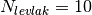 layers (for global simulations) or
 (for site simulations) with discretization
described in section 12.1. Lake albedo is
described in section 12.3. Lake surface fluxes
(section 12.4) generally
follow the formulations for non-vegetated surfaces, including the calculations
of aerodynamic resistances (section
5.2);
however, the lake surface temperature
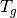 (representing an infinitesimal interface layer between
the top resolved lake layer and the atmosphere) is solved for
simultaneously with the surface fluxes. After surface fluxes are
evaluated, temperatures are solved simultaneously in the resolved snow
layers (if present), the lake body, and the soil and bedrock, using the
ground heat flux G as a top boundary condition. Snow, soil, and
bedrock models generally follow the formulations for non-vegetated
surfaces (Chapter 6), with
modifications described below.
(for site simulations) with discretization
described in section 12.1. Lake albedo is
described in section 12.3. Lake surface fluxes
(section 12.4) generally
follow the formulations for non-vegetated surfaces, including the calculations
of aerodynamic resistances (section
5.2);
however, the lake surface temperature
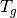 (representing an infinitesimal interface layer between
the top resolved lake layer and the atmosphere) is solved for
simultaneously with the surface fluxes. After surface fluxes are
evaluated, temperatures are solved simultaneously in the resolved snow
layers (if present), the lake body, and the soil and bedrock, using the
ground heat flux G as a top boundary condition. Snow, soil, and
bedrock models generally follow the formulations for non-vegetated
surfaces (Chapter 6), with
modifications described below.
12.1. Vertical Discretization¶
Currently, there is one lake modeled in each grid cell (with prescribed
or assumed depth d, extinction coefficient  , and fetch
f), although this could be modified with changes to the CLM subgrid
decomposition algorithm in future model versions. As currently
implemented, the lake consists of 0-5 snow layers; water and ice layers
(10 for global simulations and 25 for site simulations) comprising the
“lake body;” 10 “soil” layers; and 5 bedrock layers. Each lake body
layer has a fixed water mass (set by the nominal layer thickness and the
liquid density), with frozen mass-fraction I a state variable.
Resolved snow layers are present if the snow thickness
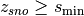 , where smin = 4 cm by
default, and is adjusted for model timesteps other than 1800 s in order
to maintain numerical stability (section 12.6.5). For global simulations
with 10 body layers, the default (50 m lake) body layer thicknesses are
given by:
, and fetch
f), although this could be modified with changes to the CLM subgrid
decomposition algorithm in future model versions. As currently
implemented, the lake consists of 0-5 snow layers; water and ice layers
(10 for global simulations and 25 for site simulations) comprising the
“lake body;” 10 “soil” layers; and 5 bedrock layers. Each lake body
layer has a fixed water mass (set by the nominal layer thickness and the
liquid density), with frozen mass-fraction I a state variable.
Resolved snow layers are present if the snow thickness
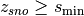 , where smin = 4 cm by
default, and is adjusted for model timesteps other than 1800 s in order
to maintain numerical stability (section 12.6.5). For global simulations
with 10 body layers, the default (50 m lake) body layer thicknesses are
given by:  of 0.1, 1, 2, 3, 4, 5, 7, 7, 10.45, and
10.45 m, with node depths
of 0.1, 1, 2, 3, 4, 5, 7, 7, 10.45, and
10.45 m, with node depths  located at the center of each
layer (i.e., 0.05, 0.6, 2.1, 4.6, 8.1, 12.6, 18.6, 25.6, 34.325, 44.775
m). For site simulations with 25 layers, the default thicknesses are
(m): 0.1 for layer 1; 0.25 for layers 2-5; 0.5 for layers 6-9; 0.75 for
layers 10-13; 2 for layers 14-15; 2.5 for layers 16-17; 3.5 for layers
18-21; and 5.225 for layers 22-25. For lakes with depth d
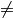 50 m and d
located at the center of each
layer (i.e., 0.05, 0.6, 2.1, 4.6, 8.1, 12.6, 18.6, 25.6, 34.325, 44.775
m). For site simulations with 25 layers, the default thicknesses are
(m): 0.1 for layer 1; 0.25 for layers 2-5; 0.5 for layers 6-9; 0.75 for
layers 10-13; 2 for layers 14-15; 2.5 for layers 16-17; 3.5 for layers
18-21; and 5.225 for layers 22-25. For lakes with depth d
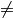 50 m and d  1 m, the top
layer is kept at 10 cm and the other 9 layer thicknesses are adjusted to
maintain fixed proportions. For lakes with d
1 m, the top
layer is kept at 10 cm and the other 9 layer thicknesses are adjusted to
maintain fixed proportions. For lakes with d  1 m, all layers
have equal thickness. Thicknesses of snow, soil, and bedrock layers
follow the scheme used over non-vegetated surfaces (Chapter 6), with
modifications to the snow layer thickness rules to keep snow layers at
least as thick as smin (section 12.6.5).
1 m, all layers
have equal thickness. Thicknesses of snow, soil, and bedrock layers
follow the scheme used over non-vegetated surfaces (Chapter 6), with
modifications to the snow layer thickness rules to keep snow layers at
least as thick as smin (section 12.6.5).
12.2. External Data¶
As discussed in Subin et al. (2012a, b), the Global Lake and Wetland Database (Lehner and Doll 2004) is currently used to prescribe lake fraction in each land model grid cell, for a total of 2.3 million km-2. As in Subin et al. (2012a, b), the Kourzeneva et al. (2012) global gridded dataset is currently used to estimate a mean lake depth in each grid cell, based on interpolated compilations of geographic information.
12.3. Surface Albedo¶
For direct radiation, the albedo a for lakes with ground temperature 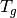 (K) above freezing is given by (Pivovarov, 1972)
(1)¶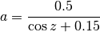
where z is the zenith angle. For diffuse radiation, the expression in eq. is integrated over the full sky to yield a = 0.10.
For frozen lakes without resolved snow layers, the albedo at cold
temperatures a0 is 0.60 for visible and 0.40 for near
infrared radiation. As the temperature at the ice surface,
, approaches freezing [  (K) (Table 2.6)], the albedo is relaxed towards 0.10 based on
Mironov et al. (2010):
(K) (Table 2.6)], the albedo is relaxed towards 0.10 based on
Mironov et al. (2010):
(2)¶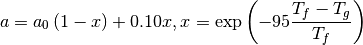
where a is restricted to be no less than that given in (1).
For frozen lakes with resolved snow layers, the reflectance of the ice surface is fixed at a0, and the snow reflectance is calculated as over non-vegetated surfaces (Chapter 3). These two reflectances are combined to obtain the snow-fraction-weighted albedo as in over non-vegetated surfaces (Chapter 3).
12.4. Surface Fluxes and Surface Temperature¶
12.4.1. Surface Properties¶
The fraction of shortwave radiation absorbed at the surface,
 , depends on the lake state. If resolved snow layers are
present, then is set equal to the absorption fraction
predicted by the snow-optics submodel (Chapter 3)
for the top snow
layer. Otherwise, is set equal to the near infrared
fraction of the shortwave radiation reaching the surface simulated by
the atmospheric model or atmospheric data model used for offline
simulations (Chapter 32). The remainder of the shortwave radiation
fraction (1
, depends on the lake state. If resolved snow layers are
present, then is set equal to the absorption fraction
predicted by the snow-optics submodel (Chapter 3)
for the top snow
layer. Otherwise, is set equal to the near infrared
fraction of the shortwave radiation reaching the surface simulated by
the atmospheric model or atmospheric data model used for offline
simulations (Chapter 32). The remainder of the shortwave radiation
fraction (1  ) is absorbed in the lake
body or soil as described in section 12.5.5.
) is absorbed in the lake
body or soil as described in section 12.5.5.
The surface roughnesses are functions of the lake state and atmospheric forcing. For frozen lakes ( 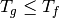 ) with resolved snow layers, the momentum roughness length 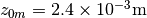 (as over non-vegetated surfaces; Chapter 5), and the scalar roughness lengths (z0q for latent heat; and z0h, for sensible heat) are given by (Zilitinkevich 1970)
(3)¶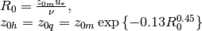
where 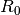 is the near-surface atmospheric roughness
Reynolds number, 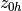 is the roughness
length for sensible heat, 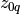 is the
roughness length for latent heat, 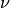 (m2 s-1) is the kinematic viscosity of air, and
 (m s-1) is the friction velocity in the
atmospheric surface layer. For frozen lakes without resolved snow
layers, 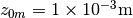 (Subin et al. (2012a)),
and the scalar roughness lengths are given by .
(m s-1) is the friction velocity in the
atmospheric surface layer. For frozen lakes without resolved snow
layers, 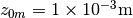 (Subin et al. (2012a)),
and the scalar roughness lengths are given by .
For unfrozen lakes, z0m is given by (Subin et al. (2012a))
(4)¶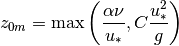
where  = 0.1, is the kinematic viscosity
of air given below, C is the effective Charnock coefficient given
below, and g is the acceleration of gravity (Table 2.6). The kinematic
viscosity is given by
= 0.1, is the kinematic viscosity
of air given below, C is the effective Charnock coefficient given
below, and g is the acceleration of gravity (Table 2.6). The kinematic
viscosity is given by
(5)¶
where 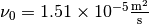 , 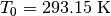, 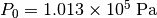 , and 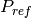 is the pressure at the atmospheric reference height. The Charnock coefficient C is a function of the lake fetch F (m), given in the surface data or set to 25 times the lake depth d by default:
(6)¶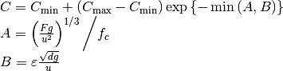
where A and B define the fetch- and depth-limitation, respectively;
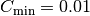 , 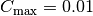,
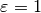 ,  , and u (m
s-1) is the atmospheric forcing wind.
, and u (m
s-1) is the atmospheric forcing wind.
12.4.2. Surface Flux Solution¶
Conservation of energy at the lake surface requires
(7)¶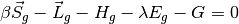
where 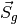 is the absorbed solar radiation in the lake,
is the fraction absorbed at the surface,
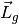 is the net emitted longwave radiation (+ upwards),
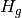 is the sensible heat flux (+ upwards),
 is the water vapor flux (+ upwards), and G is the
ground heat flux (+ downwards). All of these fluxes depend implicitly on
the temperature at the lake surface .
is the water vapor flux (+ upwards), and G is the
ground heat flux (+ downwards). All of these fluxes depend implicitly on
the temperature at the lake surface .
 converts to an energy flux based on
converts to an energy flux based on
(8)¶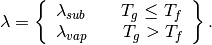
The sensible heat flux (W m-2) is
(9)¶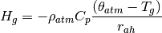
where 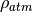 is the density of moist air (kg m-3) (Chapter 5), 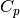 is the specific heat capacity of air (J kg-1 K-1) (Table 2.6), 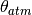 is the atmospheric potential temperature (K) (Chapter 5), is the lake surface temperature (K) (at an infinitesimal interface just above the top resolved model layer: snow, ice, or water), and 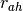 is the aerodynamic resistance to sensible heat transfer (s m-1) (section 5.1).
The water vapor flux (kg m-2 s-1) is
(10)¶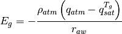
where 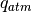 is the atmospheric specific humidity (kg kg-1) (section 2.3.1), 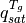 is the saturated specific humidity (kg kg-1) (section 5.5) at the lake surface temperature , and 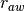 is the aerodynamic resistance to water vapor transfer (s m-1) (section 5.1).
The zonal and meridional momentum fluxes are
(11)¶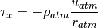
(12)¶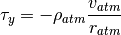
where 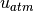 and 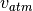 are the zonal and meridional atmospheric winds (m s-1) (section 2.3.1), and 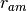 is the aerodynamic resistance for momentum (s m-1) (section 5.1).
The heat flux into the lake surface  (W m-2) is
(W m-2) is
(13)¶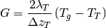
where 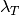 is the thermal conductivity (W
m-1 K-1),  is the
thickness (m), and 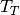 is the temperature (K) of the top
resolved lake layer (snow, ice, or water). The top thermal conductivity
of unfrozen lakes ( 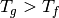 )
includes conductivities due to molecular ( 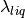 ) and
eddy (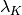 ) diffusivities (section 12.5.4), as evaluated
in the top lake layer at the previous timestep, where
is the thermal conductivity of water (Table 2.6). For frozen lakes without resolved snow layers,
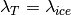 . When resolved snow layers are
present, is calculated based on the water
content, ice content, and thickness of the top snow layer, as for
non-vegetated surfaces.
is the
thickness (m), and 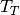 is the temperature (K) of the top
resolved lake layer (snow, ice, or water). The top thermal conductivity
of unfrozen lakes ( 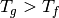 )
includes conductivities due to molecular ( 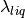 ) and
eddy (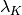 ) diffusivities (section 12.5.4), as evaluated
in the top lake layer at the previous timestep, where
is the thermal conductivity of water (Table 2.6). For frozen lakes without resolved snow layers,
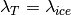 . When resolved snow layers are
present, is calculated based on the water
content, ice content, and thickness of the top snow layer, as for
non-vegetated surfaces.
The absorbed solar radiation is
(14)¶
where and
are the incident direct beam
and diffuse solar fluxes (W m-2) and  denotes the visible ( 0.7) and
near-infrared ( 0.7) wavebands (section
2.3.1), and and
are the direct beam and diffuse lake
albedos (section 12.3).
denotes the visible ( 0.7) and
near-infrared ( 0.7) wavebands (section
2.3.1), and and
are the direct beam and diffuse lake
albedos (section 12.3).
The net emitted longwave radiation is
(15)¶
where  is the upward longwave radiation from
the surface, is the downward atmospheric
longwave radiation (section 2.3.1). The upward
longwave radiation from the surface is
is the upward longwave radiation from
the surface, is the downward atmospheric
longwave radiation (section 2.3.1). The upward
longwave radiation from the surface is
(16)¶
where is the lake surface emissivity,
 is the Stefan-Boltzmann constant (W m-2 K-4) (Table 2.6), and
is the difference in lake surface
temperature between Newton-Raphson iterations (see below).
is the Stefan-Boltzmann constant (W m-2 K-4) (Table 2.6), and
is the difference in lake surface
temperature between Newton-Raphson iterations (see below).
The sensible heat , the water vapor flux
through its dependence on the saturated specific humidity, the net
longwave radiation , and the ground heat flux
, all depend on the lake surface temperature .
Newton-Raphson iteration is applied to solve for and the
surface fluxes as
(17)¶
where and the subscript “n” indicates the iteration. Therefore, the surface temperature can be written as
(18)¶
where the partial derivatives are
(19)¶
(20)¶
(21)¶
(22)¶
The fluxes of momentum, sensible heat, and water vapor are solved for
simultaneously with lake surface temperature as follows. The
stability-related equations are the same as for non-vegetated surfaces
(section 5.2),
except that the surface roughnesses are here (weakly varying) functions
of the friction velocity . To begin, z0m is set
based on the value calculated for the last timestep (for
) or based on the values in section
12.4.1 (otherwise), and the scalar roughness
lengths are set based on the relationships in section 12.4.1.
An initial guess for the wind speed including the convective velocity is obtained from (24) assuming an initial convective velocity m s-1 for stable conditions ( as evaluated from (50)) and for unstable conditions ().
An initial guess for the Monin-Obukhov length
 is obtained
from the bulk Richardson number using (46) and (48).
is obtained
from the bulk Richardson number using (46) and (48).The following system of equations is iterated four times:
Heat of vaporization / sublimation
((8))Thermal conductivity (above)
Lake surface temperature ((18))
Heat of vaporization / sublimation
((8))Sensible heat flux is updated for ((9))
Water vapor flux
is updated for
as(23)¶
 (
( (
(where the last term on the right side of equation is the change in saturated specific humidity due to the change in between iterations.
- Saturated specific humidity and its derivative are updated for (section 5.1).
- Virtual potential temperature scale ((17))
- Wind speed including the convective velocity, ((24))
- Monin-Obukhov length ((49))
- Roughness lengths ((3), (4)).
Once the four iterations for lake surface temperature have been yielded a tentative solution , several restrictions are imposed in order to maintain consistency with the top lake model layer temperature (Subin et al. (2012a)).
(24)¶
where  is the temperature of maximum liquid water
density, 3.85o C (Hostetler and Bartlein (1990)). The
first condition requires that, if there is any snow or ice present, the
surface temperature is restricted to be less than or equal to freezing.
The second and third conditions maintain convective stability in the top
lake layer.
is the temperature of maximum liquid water
density, 3.85o C (Hostetler and Bartlein (1990)). The
first condition requires that, if there is any snow or ice present, the
surface temperature is restricted to be less than or equal to freezing.
The second and third conditions maintain convective stability in the top
lake layer.
If eq. XXX is applied, the turbulent fluxes and
are re-evaluated. The emitted longwave radiation and
the momentum fluxes are re-evaluated in any case. The final ground heat
flux is calculated from the residual of the energy balance eq.
XXX in order to precisely conserve energy. XXX This ground heat flux
is taken as a prescribed flux boundary condition for the lake
temperature solution (section 12.5.3).
An energy balance check is
included at each timestep to insure that eq. XXX is obeyed to within
0.1 W m-2.
12.5. Lake Temperature¶
12.5.1. Introduction¶
The (optional-) snow, lake body (water and/or ice), soil, and bedrock system is unified for the lake temperature solution. The governing equation, similar to that for the snow-soil-bedrock system for vegetated land units (Chapter 6), is
(25)¶
where is the volumetric heat capacity (J
m-3 K-1),  is time (s), T is
the temperature (K),
is time (s), T is
the temperature (K),  is the thermal conductivity (W
m-1 K-1), and
is the thermal conductivity (W
m-1 K-1), and  is the solar
radiation (W m-2) penetrating to depth z (m). The
system is discretized into N layers, where
is the solar
radiation (W m-2) penetrating to depth z (m). The
system is discretized into N layers, where
(26)¶
is the number of actively modeled snow layers at the
current timestep (Chapter 8), and
 is as for vegetated land units (Chapter
6). Energy is conserved as
is as for vegetated land units (Chapter
6). Energy is conserved as
(27)¶
where is the volumetric heat capacity of the jth layer (section 12.5.5), is the latent heat of fusion per unit volume of the jth layer (proportional to the mass of liquid water present), and the right-hand side represents the net influx of energy to the lake system. Note that can only change due to phase change (except for changing snow layer mass, which, apart from energy required to melt snow, represents an untracked energy flux in the land model, along with advected energy associated with water flows in general), and this is restricted to occur at in the snow-lake-soil system, allowing eq. to be precisely enforced and justifying the exclusion of from the time derivative in eq. .
12.5.2. Overview of Changes from CLM4¶
Thermal conductivities include additional eddy diffusivity, beyond the Hostetler and Bartlein (1990) formulation, due to unresolved processes (Fang and Stefan 1996; Subin et al. (2012a)). Lake water is now allowed to freeze by an arbitrary fraction for each layer, which releases latent heat and changes thermal properties. Convective mixing occurs for all lakes, even if frozen. Soil and bedrock are included beneath the lake. The full snow model is used if the snow thickness exceeds a threshold; if there are resolved snow layers, radiation transfer is predicted by the snow-optics submodel (Chapter 3), and the remaining radiation penetrating the bottom snow layer is absorbed in the top layer of lake ice; conversely, if there are no snow layers, the solar radiation penetrating the bottom lake layer is absorbed in the top soil layer. The lakes have variable depth, and all physics is assumed valid for arbitrary depth, except for a depth-dependent enhanced mixing (section 12.5.4). Finally, a previous sign error in the calculation of eddy diffusivity (specifically, the Brunt-Väisälä frequency term; eq. ) was corrected.
12.5.3. Boundary Conditions¶
The top boundary condition, imposed at the top modeled layer
, where , is the downwards
surface flux G defined by the energy flux residual during the surface
temperature solution (section 12.5.3). The bottom
boundary condition, imposed at , is zero flux.
The 2-m windspeed  (m s-1) is used in the
calculation of eddy diffusivity:
(m s-1) is used in the
calculation of eddy diffusivity:
(28)¶
where is the friction velocity calculated in section 12.5.3 and k is the von Karman constant (Table 2.6).
12.5.4. Eddy Diffusivity and Thermal Conductivities¶
The total eddy diffusivity (m2 s-1) for liquid water in the lake body is given by (Subin et al. (2012a))
(29)¶
where is due to wind-driven eddies (Hostetler and Bartlein (1990)), is a modest enhanced diffusivity intended to represent unresolved mixing processes (Fang and Stefan 1996), is the molecular diffusivity of water (given by the ratio of its thermal conductivity (W m-1 K-1) to the product of its heat capacity (J kg-1 K-1) and density (kg m-3), values given in Table 2.6), and (unitless) is a factor which increases the overall diffusivity for large lakes, intended to represent 3-dimensional mixing processes such as caused by horizontal temperature gradients. As currently implemented,
(30)¶
where d is the lake depth.
The wind-driven eddy diffusion coefficient (m2 s-1) for layers  is
is
(31)¶
where is the neutral value of the turbulent Prandtl
number, is the node depth (m), the surface friction
velocity (m s-1) is  , and
varies with latitude as
. For the
bottom layer,
. As in
Hostetler and Bartlein (1990),
the 2-m wind speed (m s-1) (eq. ) is used to evaluate
and rather than the 10-m wind used by
Henderson-Sellers (1985).
, and
varies with latitude as
. For the
bottom layer,
. As in
Hostetler and Bartlein (1990),
the 2-m wind speed (m s-1) (eq. ) is used to evaluate
and rather than the 10-m wind used by
Henderson-Sellers (1985).
The Richardson number is
(32)¶
where
(33)¶
and  is the acceleration due to gravity (m s-2)
(Table 2.6), is the density of water (kg
m-3), and is
approximated as
. Note that
because here, z is increasing downwards (unlike in Hostetler and Bartlein (1990)), eq. contains no negative sign; this is a correction
from CLM4. The density of water is
(Hostetler and Bartlein (1990))
is the acceleration due to gravity (m s-2)
(Table 2.6), is the density of water (kg
m-3), and is
approximated as
. Note that
because here, z is increasing downwards (unlike in Hostetler and Bartlein (1990)), eq. contains no negative sign; this is a correction
from CLM4. The density of water is
(Hostetler and Bartlein (1990))
(34)¶
The enhanced diffusivity is given by (Fang and Stefan 1996)
(35)¶
where is calculated as in eq. except for the minimum value imposed in .
The thermal conductivity for the liquid water portion of lake body layer
i,  (W m-1 K-1) is
given by
(W m-1 K-1) is
given by
(36)¶
The thermal conductivity of the ice portion of lake body layer i, (W m-1 K-1), is constant among layers, and is given by
(37)¶
where (Table 2.6) is the nominal thermal conductivity of ice: is adjusted for the fact that the nominal model layer thicknesses remain constant even while the physical ice thickness exceeds the water thickness.
The overall thermal conductivity for layer i with ice mass-fraction is the harmonic mean of the liquid and water fractions, assuming that they will be physically vertically stacked, and is given by
(38)¶
The thermal conductivity of snow, soil, and bedrock layers above and below the lake, respectively, are computed identically to those for vegetated land units (Chapter 6), except for the adjustment of thermal conductivity for frost heave or excess ice (Subin et al., 2012a, Supporting Information).
12.5.5. Radiation Penetration¶
If there are no resolved snow layers, the surface absorption fraction is set according to the near-infrared fraction simulated
by the atmospheric model. This is apportioned to the surface energy
budget (section 12.4.1), and thus no additional radiation is absorbed in
the top (currently 0.6 m) of unfrozen lakes, for which
the light extinction coefficient (m-1)
varies between lake columns (eq. ). For frozen lakes
( ), the remaining fraction of surface absorbed
radiation that is not apportioned to the surface energy budget is
absorbed in the top lake body layer. This is a simplification, as lake
ice is partially transparent. If there are resolved snow layers, then
the snow optics submodel (Chapter 3) is used to calculate the snow layer
absorption (except for the absorption predicted for the top layer by the
snow optics submodel, which is assigned to the surface energy budget),
with the remainder penetrating snow layers absorbed in the top lake body
ice layer.
For unfrozen lakes, the solar radiation remaining at depth in the lake body is given by
(39)¶
For all lake body layers, the flux absorbed by the layer i, , is
(40)¶
The argument of each exponent is constrained to be non-negative (so = 0 for layers contained within ). The remaining flux exiting the bottom of layer is absorbed in the top soil layer.
The light extinction coefficient (m-1), if
not provided as external data, is a function of depth d (m)
(Subin et al. (2012a)):
(41)¶
12.5.6. Heat Capacities¶
The vertically-integrated heat capacity for each lake layer, (J m-2) is determined by the mass-weighted average over the heat capacities for the water and ice fractions:
(42)¶![c_{v,i} =\Delta z_{i} \rho _{liq} \left[c_{liq} \left(1-I_{i} \right)+c_{ice} I_{i} \right] .](../../_images/math/3d909d94c365497dff7130856fb22b25c8b9a29d.png)
Note that the density of water is used for both ice and water fractions, as the thickness of the layer is fixed.
The total heat capacity for each soil, snow, and bedrock layer (J m-2) is determined as for vegetated land units (Chapter 6), as the sum of the heat capacities for the water, ice, and mineral constituents.
12.5.7. Crank-Nicholson Solution¶
The solution method for thermal diffusion is similar to that used for soil (Chapter 6), except that the lake body layers are sandwiched between the snow and soil layers (section 12.5.1), and radiation flux is absorbed throughout the lake layers. Before solution, layer temperatures (K), thermal conductivities (W m-1 K-1), heat capacities (J m-2), and layer and interface depths from all components are transformed into a uniform set of vectors with length and consistent units to simplify the solution. Thermal conductivities at layer interfaces are calculated as the harmonic mean of the conductivities of the neighboring layers:
(43)¶
where is the conductivity at the interface between
layer i and layer i + 1, is the depth of the node of
layer i, and is the depth of the interface below
layer i. Care is taken at the boundaries between snow and lake and
between lake and soil. The governing equation is discretized for each
layer as
(44)¶
where superscripts n + 1 and n denote values at the end and
beginning of the timestep  , respectively,
(W m-2) is the downward heat flux at the bottom of layer
i, and is the solar radiation absorbed in layer
i.
, respectively,
(W m-2) is the downward heat flux at the bottom of layer
i, and is the solar radiation absorbed in layer
i.
Eq. is solved using the semi-implicit Crank-Nicholson Method, resulting in a tridiagonal system of equations:
(45)¶![\begin{array}{l} {r_{i} =a_{i} T_{i-1}^{n+1} +b_{i} T_{i}^{n+1} +cT_{i+1}^{n+1} ,} \\ {a_{i} =-0.5\frac{\Delta t}{c_{v,i} } \frac{\partial F_{i-1} }{\partial T_{i-1}^{n} } ,} \\ {b_{i} =1+0.5\frac{\Delta t}{c_{v,i} } \left(\frac{\partial F_{i-1} }{\partial T_{i-1}^{n} } +\frac{\partial F_{i} }{\partial T_{i}^{n} } \right),} \\ {c_{i} =-0.5\frac{\Delta t}{c_{v,i} } \frac{\partial F_{i} }{\partial T_{i}^{n} } ,} \\ {r_{i} =T_{i}^{n} +0.5\frac{\Delta t}{c_{v,i} } \left(F_{i-1} -F_{i} \right)+\frac{\Delta t}{c_{v,i} } \phi _{i} .} \end{array}](../../_images/math/1fdafce5a164ba7fddfe40a87e0ca68477ed0d0f.png)
The fluxes are defined as follows: for the top layer,
 , where G is defined as in
section 12.5.3 (the factor of 2 merely cancels
out the Crank-Nicholson 0.5 in the equation for ).
For the bottom layer, .
For all other layers:
, where G is defined as in
section 12.5.3 (the factor of 2 merely cancels
out the Crank-Nicholson 0.5 in the equation for ).
For the bottom layer, .
For all other layers:
(46)¶
12.5.8. Phase Change¶
Phase change in the lake, snow, and soil is done similarly to that done for the soil and snow for vegetated land units (Chapter 6), except without the allowance for freezing point depression in soil underlying lakes. After the heat diffusion is calculated, phase change occurs in a given layer if the temperature is below freezing and liquid water remains, or if the temperature is above freezing and ice remains.
If melting occurs, the available energy for melting, (J m-2), is computed as
(47)¶
where is the temperature of the layer after thermal diffusion (section 12.5.7), and is as calculated in section 12.5.6. The mass of melt in the layer M (kg m-2) is given by
(48)¶
where (J kg-1) is the latent heat of fusion of water (Table 2.6), and is the mass of ice in the layer: for a lake body layer, or simply the soil / snow ice content state variable ( ) for a soil / snow layer. The heat remainder, is given by
(49)¶
Finally, the mass of ice in the layer is adjusted downwards by , and the temperature of the layer is adjusted to
(50)¶
where .
If freezing occurs, is again given by but will be negative. The melt , also negative, is given by
(51)¶
where is the mass of water in the layer: for a lake body layer, or the soil / snow water content state variable ( ). The heat remainder is given by eq. and will be negative or zero. Finally, is adjusted downwards by and the temperature is reset according to eq. .
In the presence of nonzero snow water without resolved snow layers over
an unfrozen top lake layer, the available energy in the top lake layer is used to melt the snow. Similar to above, is either completely melted and the remainder of heat returned to the top lake layer, or the available heat is exhausted and the top lake layer is set to freezing. The snow thickness is adjusted downwards in proportion to the amount of melt, maintaining constant density.
12.5.9. Convection¶
Convective mixing is based on
Hostetler et al.’s (1993, 1994) coupled
lake-atmosphere model, adjusting the lake temperature after diffusion
and phase change to maintain a stable density profile. Unfrozen lakes
overturn when , in which case the layer
thickness weighted average temperature for layers 1 to  is
applied to layers 1 to and the densities are updated. This
scheme is applied iteratively to layers .
Unstable profiles occurring at the bottom of the lake (i.e., between
layers and ) are treated
separately (Subin et al. (2012a)), as occasionally
these can be induced by
heat expelled from the sediments (not present in the original
Hostetler et al. (1994) model). Mixing proceeds
from the bottom upward in this
case (i.e., first mixing layers and
, then checking and
and mixing down to if
needed, and on to the top), so as not to mix in with warmer over-lying
layers.
is
applied to layers 1 to and the densities are updated. This
scheme is applied iteratively to layers .
Unstable profiles occurring at the bottom of the lake (i.e., between
layers and ) are treated
separately (Subin et al. (2012a)), as occasionally
these can be induced by
heat expelled from the sediments (not present in the original
Hostetler et al. (1994) model). Mixing proceeds
from the bottom upward in this
case (i.e., first mixing layers and
, then checking and
and mixing down to if
needed, and on to the top), so as not to mix in with warmer over-lying
layers.
For frozen lakes, this algorithm is generalized to conserve total enthalpy and ice content, and to maintain ice contiguous at the top of the lake. Thus, an additional mixing criterion is added: the presence of ice in a layer that is below a layer which is not completely frozen. When this occurs, these two lake layers and all those above mix. Total enthalpy Q is conserved as
(52)¶
Once the average ice fraction is calculated from
(53)¶
the temperatures are calculated. A separate temperature is calculated for the frozen ( ) and unfrozen ( ) fractions of the mixed layers. If the total heat content Q is positive (e.g. some layers will be above freezing), then the extra heat is all assigned to the unfrozen layers, while the fully frozen layers are kept at freezing. Conversely, if , the heat deficit will all be assigned to the ice, and the liquid layers will be kept at freezing. For the layer that contains both ice and liquid (if present), a weighted average temperature will have to be calculated.
If , then , and is given by
(54)¶
If , then , and is given by
(55)¶
The ice is lumped together at the top. For each lake layer j from 1 to i + 1, the ice fraction and temperature are set as follows, where :
If , then and .
Otherwise, if , then the layer will contain both ice and water. The ice fraction is given by . The temperature is set to conserve the desired heat content that would be present if the layer could have two temperatures, and then dividing by the heat capacity of the layer to yield
(56)¶
Otherwise, and .
12.5.10. Energy Conservation¶
To check energy conservation, the left-hand side of eq. XXX is re-written to yield the total enthalpy of the lake system (J m-2) :
(57)¶
where is the water mass of the ith layer (similar to section 12.5.8), and is the mass of snow-ice not present in resolved snow layers. This expression is evaluated once at the beginning and once at the end of the timestep (re-evaluating each ), and the change is compared with the net surface energy flux to yield the error flux (W m-2):
(58)¶
If W m-2, it is subtracted from the sensible heat flux and added to G. Otherwise, the model is aborted.
12.6. Lake Hydrology¶
12.6.1. Overview¶
Hydrology is done similarly to other impervious non-vegetated columns
(e.g., glaciers) where snow layers may be resolved but infiltration into
the permanent ground is not allowed. The water mass of lake columns is
currently maintained constant, aside from overlying snow. The water
budget is balanced with  (eq. ; kg m-2
s-1), a generalized runoff term for impervious land units
that may be negative.
(eq. ; kg m-2
s-1), a generalized runoff term for impervious land units
that may be negative.
There are some modifications to the soil and snow parameterizations as compared with the soil in vegetated land units, or the snow overlying other impervious columns. The soil can freeze or thaw, with the allowance for frost heave (or the initialization of excess ice) (sections 12.5.4 and 12.5.8), but no air-filled pore space is allowed in the soil. To preserve numerical stability in the lake model (which uses a slightly different surface flux algorithm than over other non-vegetated land units), two changes are made to the snow model. First, dew or frost is not allowed to be absorbed by a top snow layer which has become completely melted during the timestep. Second, because occasional instabilities occurred during model testing when the Courant–Friedrichs–Lewy (CFL) condition was violated, due to the explicit time-stepping integration of the surface flux solution, resolved snow layers must be a minimum of = 4 cm thick rather than 1 cm when the default timestep of 1800 s is used.
12.6.2. Water Balance¶
The total water balance of the system is given by
(59)¶
where (kg m-2) is the total mass of snow
(both liquid and ice, in resolved snow layers or bulk snow),
and are the masses of water phases
(kg m-2) in soil layer i,  and
and
 are the precipitation forcing from the atmosphere (kg
m-2 s-1), is the ice runoff
associated with snow-capping (below), is the ground
evaporation (section 12.4.2), and
is the number of hydrologically active soil layers (as opposed to dry bedrock
layers).
are the precipitation forcing from the atmosphere (kg
m-2 s-1), is the ice runoff
associated with snow-capping (below), is the ground
evaporation (section 12.4.2), and
is the number of hydrologically active soil layers (as opposed to dry bedrock
layers).
12.6.3. Precipitation, Evaporation, and Runoff¶
All precipitation reaches the ground, as there is no vegetated fraction. As for other land types, incident snowfall accumulates (with ice mass and thickness ) until its thickness exceeds a minimum thickness , at which point a resolved snow layer is initiated, with water, ice, dissolved aerosol, snow-grain radius, etc., state variables tracked by the Snow Hydrology submodel (Chapter 8). The density of fresh snow is assigned as for other land types (Chapter 8). Solid precipitation is added immediately to the snow, while liquid precipitation is added to snow layers, if they exist, after accounting for dew, frost, and sublimation (below). If exceeds after solid precipitation is added but no snow layers are present, a new snow layer is initiated immediately, and then dew, frost, and sublimation are accounted for. Snow-capping is invoked if the snow depth , in which case additional precipitation and frost deposition is added to .
If there are resolved snow layers, the generalized “evaporation”
(i.e., evaporation, dew, frost, and sublimation) is
treated as over other land units, except that the allowed evaporation
from the ground is unlimited (though the top snow layer cannot lose more
water mass than it contains). If there are no resolved snow layers but
and , sublimation
(kg m-2 s-1) will be
given by
(60)¶
If , and there are no resolved snow
layers or the top snow layer is not unfrozen, then the rate of frost
production . If
but the top snow layer has completely thawed during the Phase Change step
of the Lake Temperature solution (section 12.5.8), then
frost (or dew) is not allowed to accumulate (), to
insure that the layer is eliminated by the Snow Hydrology
(Chapter 8) code. (If ,
then no snow is present (section 12.4.2), and
evaporation or dew deposition is balanced by .) The
snowpack is updated for frost and sublimation:
(61)¶
If there are resolved snow layers, then this update occurs using the Snow Hydrology submodel (Chapter 8). Otherwise, the snow ice mass is updated directly, and is adjusted by the same proportion as the snow ice (i.e., maintaining the same density), unless there was no snow before adding the frost, in which case the density is assumed to be 250 kg m-3.
12.6.4. Soil Hydrology¶
The combined water and ice soil volume fraction in a soil layer
 is given by
is given by
(62)¶
If , the pore volume fraction at saturation (as may occur when ice melts), then the liquid water mass is adjusted to
(63)¶
Otherwise, if excess ice is melting and , then the water in the layer is reset to
(64)¶
This allows excess ice to be initialized (and begin to be lost only after the pore ice is melted, which is realistic if the excess ice is found in heterogeneous chunks) but irreversibly lost when melt occurs.
12.6.5. Modifications to Snow Layer Logic¶
A thickness difference
adjusts the minimum resolved snow layer thickness for lake columns as
compared to non-lake columns. The value of is chosen to
satisfy the CFL condition for the model timestep. By default,
 = 1 cm and = 4 cm. See
Subin et al. (2012a; including Supporting Information)
for further discussion.
= 1 cm and = 4 cm. See
Subin et al. (2012a; including Supporting Information)
for further discussion.
The rules for combining and sub-dividing snow layers (section 8.7) are adjusted for lakes to maintain minimum thicknesses of and to increase all target layer thicknesses by . The rules for combining layers are modified by simply increasing layer thickness thresholds by . The rules for dividing snow layers are contained in a separate subroutine that is modified for lakes, and is a function of the number of layers and the layer thicknesses. There are two types of operations: (a) subdividing layers in half, and (b) shifting some volume from higher layers to lower layers (without increasing the layer number). For subdivisions of type (a), the thickness thresholds triggering subdivision are increased by for lakes. For shifts of type (b), the thickness thresholds triggering the shifts are increased by . At the end of the modified subroutine, a snow ice and liquid balance check are performed.
In rare instances, resolved snow layers may be present over an unfrozen top lake body layer. In this case, the snow layers may be eliminated if enough heat is present in the top layer to melt the snow: see Subin et al. (2012a, Supporting Information).